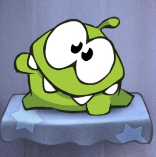
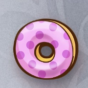
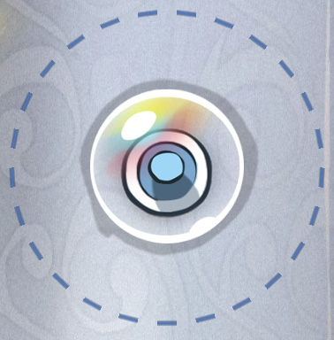
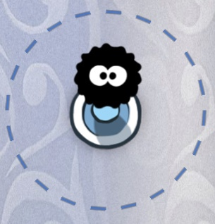
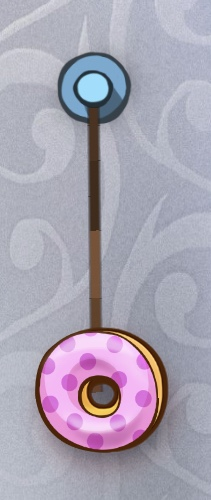
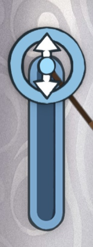
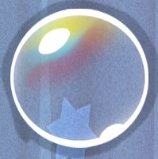
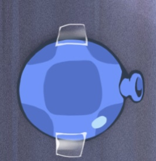
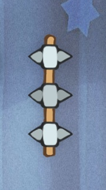

| 게임 제목 | Cut the Rope |
| 게임 특징 |
- 밧줄을 잘라 주인공 캐릭터 "얌냠" 에게 도넛을 주어야 하는 게임 - 조작이 간편하고 단순하지만, 쉽지만은 않은 난이도 - 게임 내에 존재하는 다양한 종류의 기믹들 - 퍼즐이 메인 요소인 게임이지만, 타이밍을 맞추는 것도 적지 않은 비중을 차지함. |
| 선정 이유 |
- 플랫폼이 모바일로서 쉽게 플레이 가능함 - 쉽고 심플한 조작 방식을 가지고 있음 - 한 스테이지를 클리어 하면 다음 스테이지로 넘어가는 방식 - 게임을 다채롭게 해주는 다양한 기믹들 |
|  | 암냠 : 주인공 캐릭터로 이 캐릭터에게 도넛을 먹이면 스테이지를 클리어 할 수 있다. |
|  | 도넛 : "암냠" 에게 도넛을 먹이기 위해 다양한 기믹들을 활용하는 것이 게임의 주가된다. |
|  | 압정 : 주위에 푸른 점선으로 그려진 영역이 존재하며, 이 영역으로 들어가면 "밧줄"로 연결된다 |
|  | 거미 : 게임의 진행 템포를 빠르게 하기 위한 기믹으로 기본적으로는 "압정" 과 같지만, 밧줄이 연결되면 거미가 줄을 타고 와서 도넛을 가져가 게임오버 될 수 있다. |
|  |
밧줄 : 도넛과 연결 되면 도넛이 범위 이상으로 가는 것을 막는 역할을 한다. 드래그로 끊어 낼 수 있으며, 도넛과 연결된 밧줄이 없으면 도넛이 자유낙하를 하게 된다. 또한, 밧줄의 원래 길이보다 길어지면 붉게 변하며 팽팽해지는데, 이때 밧줄을 자르면 관성으로 도넛이 날아가게 되며 이를 이용한 기믹도 존재한다. |
|  | 줄 고리 : 기본적으로는 압정과 같지만, 정해진 방향으로 움직일 수 있다. 이를 통해 밧줄을 늘려 직접 팽팽하게 만드는 것도 가능하다. |
|  | 비눗방울 : 도넛과 닿으면 도넛이 비눗방울 속으로 들어가며, 들어가 있는 동안은 계속해서 위로 올라간다. 지나치게 위로 올라가면 게임오버 당할 수 있으며, 터치를 통해 방울을 터뜨려 떨어뜨릴 수 있다. |
|  |
풍선 : 터치를 하여 바람을 뿜어 낼 수 있으며, 뿜어낸 바람으로 도넛에 힘을 가해 움직이게 할 수 있다. |
| 별 : 일종의 수집요소로, 도넛을 별에 다가가게 해 획득 할 수 있다. 스테이지마다 3개씩 등장하며, 획득한 갯수에 따라 스테이지의 달성도로 표기된다. 게임 템포를 올리기 위한 기믹으로 일정 시간이 지나면 사라지는 별도 존재한다. |
|
|  | 스파이크 : 장애물로 이곳에 도넛이 닿게 되면 부서지면서 게임오버를 당하게 된다. |